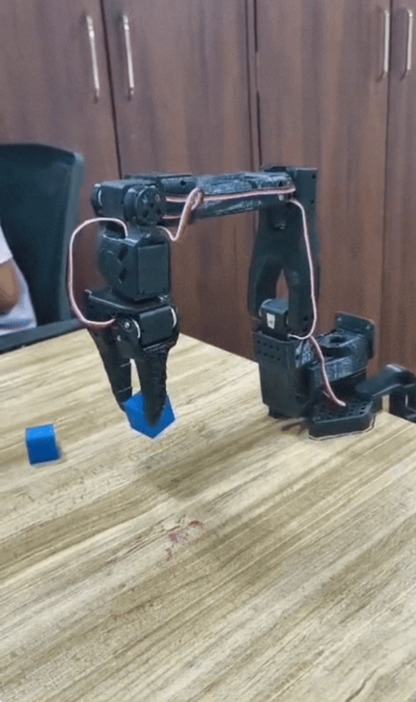
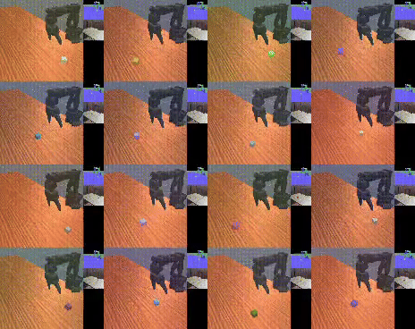
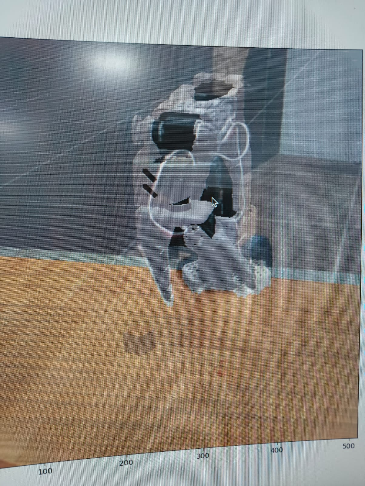
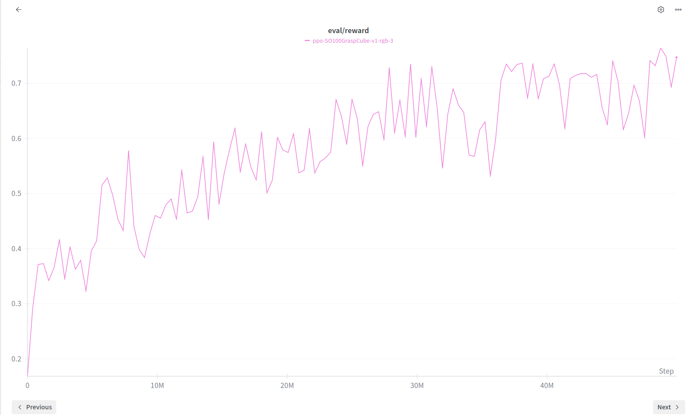
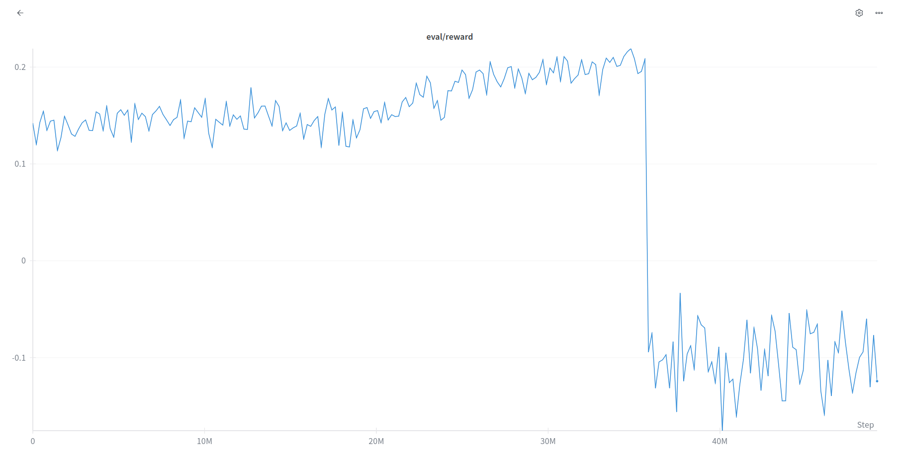

Robotics changes everyday but it is still the same three things

The purpose of this blog is not to technically explain the algorithms side of robot learning. But we rather explain intent on how we dealt and experimented on things along the way.
The division of the blog is quite unequal. The flow matching sim2real part is bigger than the most but that explains the timeline that we followed. We started with Reinforcement learning when we were new to the robotics side of things.
The three parts we divide the blog in:
- Reinforcement learning Sim2real
- Imitation learning
- VLAs and Foundation models / video models?
The catch
We did not know how to start with robotics. So we decided to start with the toughest problem because anyways we didn't know shit.
"Usually people start easy but we decided to start tough."
Visual sim2real transfer is meant to be tough because simulators cannot exactly replicate the physics involved with the real world, there are always certain unexpected deltas.
1) Reinforcement learning
Making robots pick up objects or robot manipulation is uniquely difficult.
What we said
The toughest problem of robot learning: the zero shot sim2real transfer with our SO100 arm. Not gonna lie this sounds cool with zero real data. How is the robot learning real successful manipulation with absolute no prior experience.
What we had
- 3D printed SO100
- Camera (phone camera worked)
- RTX 4090
Our task
Teach our SO100 to pick up a cube with just a camera (no depth involved). The PPO algorithm is able to achieve a robust sim2real pipeline with a definitive range of spawn size and area for the cube. Zero shot sim2real is this: no prior demonstrations and then the pipeline is robust enough to make the robot pick the unseen cube.
Why did we say manipulation is hard
Because manipulation requires contact. We account for all the forces acting with that also the robot control. Simulation is perfect but variability in hardware makes it tough. We account for offsets in motors, home pose, camera alignment as well as robot calibration.
Robust policy? Domain randomization?
Robot learning loves these terms. What are they: for me they mean control.
More of these two means better control for tasks, for robots.
How much domain randomization
Our policy had domain randomization options we weren't sure of.
We tried training with robot colour set to random and that did not work. Defining robot colour pretty much did the job.
The robot workspace was limited; the spawn area was supposed to be defined.

SimulationWhat does SO100 calibration mean
The normal SO100 calibration script that exists in LeRobot which all of us have come across.
Camera alignment
The most time taking part in sim2real. This is the most important input for the transfer of our policy trained in simulation.
So we said no depth which means a phone camera does the job. And our SO100? 3D printed. It was defined and loaded in the simulation.
In alignment scripts, basically you align the shadow of your 3D environment to match the camera output seen on the screen as close as it gets, to note down the x, y, z coordinates with the FOV values.

Camera alignmentWhy does calibration affect alignment
The movement of the robot arm is through the inputs given by the scripts involved. But the actions of the robot might differ than the state that the simulation expects it to be in.
This happens when calibration is off. The zeroes and the servo offsets are not properly into consideration.
The pose loaded into the simulation, if different from what our SO100 looks like, then how do we even align the camera. That doesn't work.
What is the control frequency and does it matter
The speed of the action output and how fast the robot moves. Faster smoother actions are usually difficult to tune.
Why would you want this?
Because collecting 50s and 100s of demos is tough, and repeating that for every task you wanna do is tedious. A robot learning to move by itself, by making mistakes in simulation, is your answer.
The PPO Repository
We started with the standard PPO implementation. The repository had everything: the actor-critic setup, the clipped objective, GAE for advantage estimation. PPO clips probability ratios to keep updates conservative. We trained with the proper conditions and this worked. Through this we learnt things but now we wanted to build on this. We had recently read about the flow matching policy gradients. PPO works with discrete probability updates but the task we were trying to do required smoother actions. Could we try with a flow policy was the question.
This is an example of a slower control frequency.
What is FPO?
Flow Policy Optimization.
The core idea: treat policy learning as a flow matching problem instead of traditional policy gradients.
Think of it like this, instead of discrete jumps in probability space, you're learning continuous flows. Instead of gaussian curves, your policy becomes a vector field that smoothly transforms noise into actions. You're doing conditional flow matching on the action distribution.
The math
You sample noise ε ~ N(0,I), you learn a flow field that denoises it into actions. The loss is calculated over multiple Monte Carlo samples. Instead of KL divergence constraints like in PPO, you're optimizing flow matching losses.
Cube picking (FPO)
We talked about domain randomization and smoothening of actions; we wanted to check if FPO worked better at both of these things. So we implemented FPO in our sim2real pipeline: github.com/vruga/flow-skill.
It was expected to converge quicker than PPO and give us positive results. However FPO explodes before any meaningful results can be seen. This is something we, all of this for, we recently saw a paper that dealt with this FPO exploding part. So there was a paper published on this recently.
What does the paper do?
FPO++
FPO++ takes FPO and adds two critical improvements.
Per-sample ratios:
Standard FPO averages losses across Monte Carlo samples and then calculates one ratio per action. All samples get clipped together or not at all.
FPO++ says no, calculate a separate ratio for each (τ, ε) sample. Each sample gets its own trust region. Finer grained control during updates. When you're taking multiple gradient steps, this matters. A lot.
Asymmetric trust region (ASPO):
For positive advantage actions (good actions you want to reinforce), use PPO clipping. Standard stuff.
For negative advantage actions (bad actions you want to discourage), use the SPO objective instead. Instead of just zeroing out gradients when ratios exceed the trust region, SPO pulls ratios back. It provides a gradient signal that prevents aggressive CFM loss increases.
Why asymmetric?
Because increasing losses (making bad actions worse) needs more careful handling than decreasing losses (making good actions better). The asymmetry stabilizes training when learning from scratch. It prevents aggressive decreases in action likelihoods and aggressive increases in KL divergence.
Wandb logging
The graphs that we see for the FPO and PPO respectively.

PPO

FPOFPO vs PPO
For contact rich manipulation, this stability is everything. We tried to incorporate this FPO++ improvements and
The takeaways for us (in lerobot-sim2real)
Domain randomization on cube spawn positions, lighting, small variations in initial poses. The policy learned to handle it all.
Zero shot transfer worked. The robot picked up cubes it had never seen in simulation. No finetuning on real data. No demonstrations. Just pure sim2real with PPO or FPO.
Not gonna lie, watching it work the first time is amazing. The excitement is wild.
But sim2real is a pain. The changes in the environment or disturbances, everything matters. Also to randomize the slightest of changes we require big training runs.
Check out the repo. Try it yourself. Break things. Make it better. That's how we do robot learning.
2. Imitation learning
This was supposed to be the first thing we do but it required a leader and a follower setup which made us experiment PPO sim2real first.
The most important skill native to robot learning has to be the behaviour of retrying that the robot learns. We teach it a singular task: in our case we taught our SO100 bot to pick up a wheel, put it in a cardboard box, come back and sit again.
Leader follower setup?
Two SO100s, one leading to teleoperate the other. The leader and the follower pair it is.
It was my first time recording teleoperation datasets and it was weirdly time consuming yet satisfactory. 50 episodes properly timed. Most of the video dataset is empty. There is a time of 1 min for the dataset recording and 1 min for environment reset but the action you do barely takes seconds. Not to miss, you've been doing that forever for three hours.
3 hours of dataset collection, pushed to Hugging Face, training time of 1 hour and the policy was deployed. The dataset: huggingface.co/datasets/Dimios45/santra.
Teleop
Again simple laptop webcam it is with our SO100 plugged in to power supply, it learnt the skill. We actually had the bot doing the task clean. If the bot missed the wheel once it learnt to try again.
The best part
Robot generalises some things. In the dataset the position of the wheel is marked but inference even with the position not known is good enough. Inference runs good on a laptop when you download the model weights.
ACT action chunking transformer datasets can be used to train a single task only model, something that generalises when the data collection does not overfit. We require the environment to be constant and the bot learns to retry.
ACT
3. SmolVLA
Then we had also read a lot of vision language action models, VLMs with an action head which generates robot actions. SmolVLA is supported by the LeRobot ecosystem. The same dataset trained with different training scripts. Requires 3 hours of training, more compute, more time.
For SmolVLA we learnt the training requires time and hence finetuning is harder. While training there is a label to be set. This is specified in the training terminal command. The label is the description of the task.
SmolVLA when deployed on the same laptop, inference there were jerky moments. These usually point to a failed policy but the inference was running too slow on the engine. We tried different laptops and there it goes. Even SmolVLA does succeed on the horizon of the picking and placing tasks.
I have had people asking why are programmed robots still better at doing tasks and jobs and why then is robot learning a thing. At its core the idea of robot learning is wild. The problems in the representation spaces and how well the compressions are able to justify the real environment is one of the most exciting things that matter. But robots figuring to solve problems and trying to learn the task they are meant to do remains the most interesting problem that humans should figure out.
Conclusion
If we talk about imitation learning policies, they are very rigid with the environment also the task. We need data to be recorded and also a rigid format to train on.
When we talk about SmolVLA, we see it works good even for a stack of tasks but it is harder to tune and generalise.
Also, visual sim2real is possible and it works but it requires a lot of preconditioning on the environment.
Acknowledgements
SO100 and LeRobot ecosystem.
Thanks to Stone Tao for PPO lerobot-sim2real.
We also thank the authors of Flow Matching Policy Gradients.